龍鳳宮/苗栗縣竹南鎮
台風一過の朝、空は見事に晴れ渡り…と言いたいところだが、今日もまた雨。
テレビを見ているとあちこちで洪水や土砂災害があったようだ。
台風だった昨日よりも降りが強いって…どういうこっちゃねん。
で、向かった先は苗栗縣の竹南。
車窓から何やら不思議な物体が見えてくる。
ボーリング場の看板？大宮のロケットビル？いえいえ、今日最初の訪問地、龍鳳宮の巨大媽祖像である。
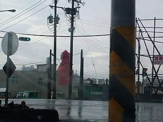
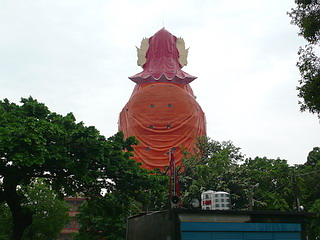
看板も気合入りまくり。大媽祖的故郷だそうで。
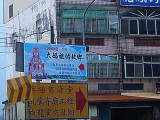
正面に回りこむ。デカイなあ～。
媽祖像の高さは約41メートル。内部は11層になっているという。
そういえば先程裏側から見た際に背中に窓が見えた。
そのうちの幾つかには灯りがついていたのが確認できたのでこれは胎内巡りの期待が大である。
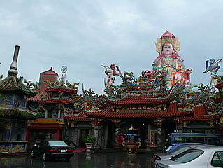
媽祖とは華南、特に福建で盛んに信仰されている海の神さまだ。
特に台湾では関帝信仰と同じくらい盛り上がっている神さまのひとつである。
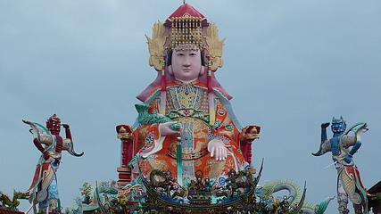
媽祖の左右にいるのは眷属の千里眼と順風耳。
遠くを見る、遠くを聴くということは航海の際、重要なファクターとなろう。
媽祖像がいる建物の手前の建物（前殿）に入る。
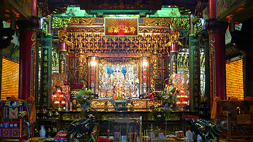
中央にはもちろん豪華絢爛な衣装や冠を身にまとった媽祖が祀られている。
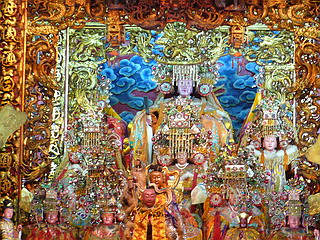
ここにも左右に千里眼将軍と順風耳将軍が。
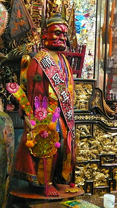
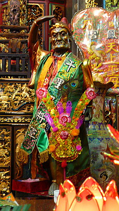
ここで注目したいのは小さい灯りを点した壁。
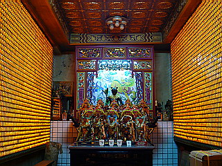
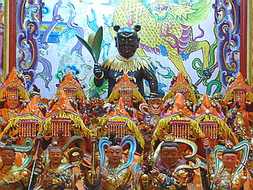
台湾の寺廟ではよく小さい灯りを円錐型のタワーにしつらえているのだが、ココの場合、それを壁に転用しているので物凄いゴージャスな壁になっているのだ。べったべたの中華装飾の中、そこだけがSF映画のセットのように浮いている。
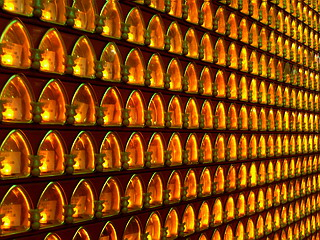
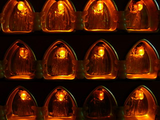
廟内の売店で売られていた供物セット。
箱の中身は紙銭と思われるが、もしかしたら福徳正神とか文昌帝君のプラモかも知れない。
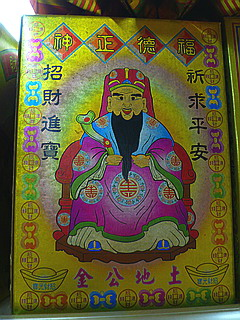
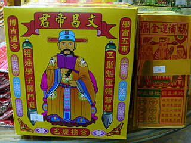
手前のお堂を抜けるとそこは大媽祖像の真下の建物。
先程の前殿に対して装飾の度合いもググッと本気モード。
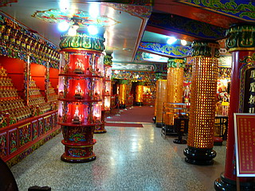
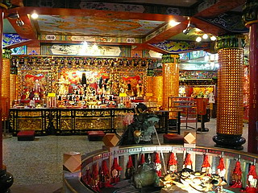
前殿では壁の一部にしか使用されてなかったミニランタンがここでは壁はおろか柱にまで使われている。
目も眩むような豪華絢爛っぷり。
派手で当たり前、の道教寺院のインテリアの中でもかなりのやんちゃっぷりである。
消費電力もかなりのものと察するが、それ以上に目がチカチカしてくる。一日いたら視力が4分の1になりそうな勢い。
地球にも目にも厳しい空間である。
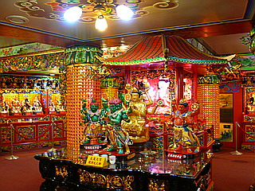
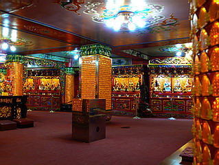
そんな激輝空間の周りを囲むのは六十甲子像。
という事は…
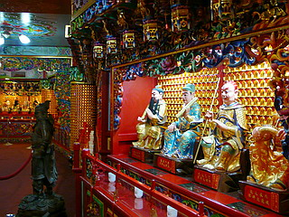
やっぱりいました！！！
プレジデントオブ☆ファンキーゴッド、甲子太歳金辨大将軍のお出ましである。
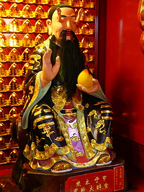
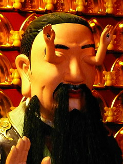
先日金剛宮で初めて見て以来、私の中では道教最強の奇天烈ゴッドの座に輝く神さまである。
今の私にとっては将軍様といえばアノ将軍ではなく、無論暴れん坊将軍でもなく、甲子太歳金辨大将軍様のことであるのは言を待たない。
金剛宮のものよりもアダルティな将軍様、手の大きさも若干控えめなれど、背後の電飾壁の派手さを吹っ飛ばすほどの強烈なインパクト。例えばガチャポンでコレが出てきたら泣きますね。私。
美人のガイドさんが「参拝請上二・三楼」と仰っているので遠慮なく上がらせてもらいましょ。
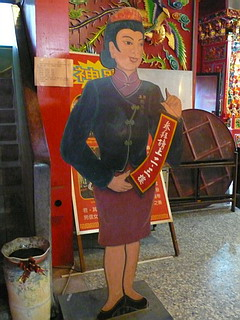
二階は幾つかの部屋に分かれてはいるが、すべてミニチュア媽祖像に覆い尽くされている。
一体一体に名前が記されている。信者の奉納なのだろう。
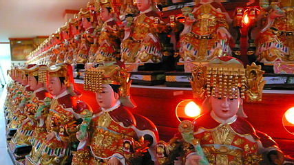
更に階上に上るとそこは大媽祖像の足元。三楼というのは屋上テラスの事だったんですね。
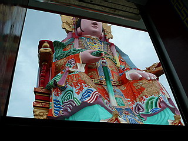
神々しいまでの装飾っぷりである。あ、神さまでしたね。
| 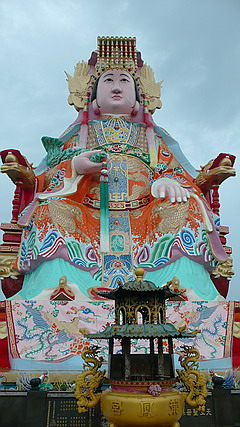 |
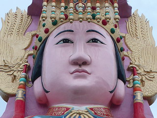 |
もみ上げがオシャレのポイントである。
|
さて、肝心の媽祖像胎内巡りだがこの屋上テラスには胎内への入口が見つからない。
一旦、1階に戻り隅っこで新聞を読んでいたおじさんに例によって身振り手振りで質問する。
「ア～、ニカイニカイ」あ、二階ですか。どうもどうも。
で、再びミニチュア媽祖像が並ぶ二階に戻る。
すると一番奥の方に、先程はあまりにも地味で見落としていたドアがあった。
11層もある胎内空間への出入り口がコレだけとは。
消防法もへったくれもないあまりにも秘密チックなドアだった。
ドアノブに手をかけると、ガチッ！…アイヤー、やっぱり閉まってたあ～！
で、新聞を読んでいるおじさんに最アタック。今度は朝飯食ってました。
よく聞けば（って話半分どころか話1割以下しか判らないのだが）一般の参拝客は入れないらしい。
ふとおじさんの脇を見るとミニチュア媽祖像を奉納した人だけが胎内に入ってなんたらかんたら…みたいな貼り紙があった。
おお、奉納すれば中に入れるのか！と一瞬色めき立ったが、よく見ればミニチュア媽祖像のお値段は想像を絶する程の金額だった。泣く泣く諦めるも、少なくとも道教界でも巨像の胎内巡りという愉快な信仰アトラクションが存在することを確認できたので良しとしましょうか。
屋上テラスにせり出すように立っている千里眼と順風耳。
青が千里眼、赤が順風耳。
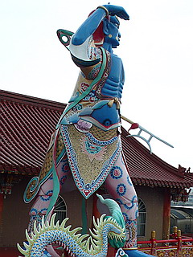
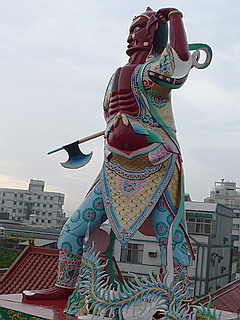
私の目には見えないが彼らの目、耳には次に訪れるであろうこの巨人の姿が見えているはずである。
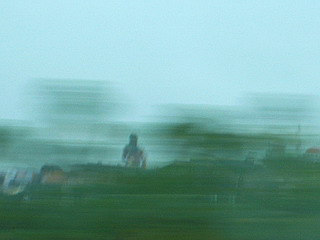
その巨人の正体とは！
台湾大佛列伝3
珍寺大道場 HOME